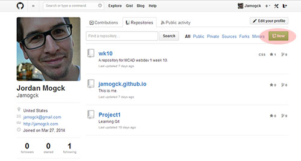

GitHub 101
Creating your first Git repository on GitHub.
Creating your first Git repository on GitHub.
GitHub is a tool which utilizes the popular version control system, Git.
Git is a version control system which enables developers to log a complete history of their projects in a repository for the following purposes:
GitHub is essentially a network of Git repositories, hosted in a remote server (not your local machine).
Consider the following scenario.
You’ve been hired by a client to develop a brand new website.
First, you spend a few days creating an HTML prototype, to help you determine what the client wants.
You write the code, make changes, and save the file to your disk. Maybe at some point you code a really cool feature you’d like to run by her. Unfortunately, she doesn’t really like it and asks to remove it. So you delete the feature and keep working. But then a couple of days later, she changes her mind and really does want that feature after all. But you already deleted it from the code. Uh oh.At this point you have a few options:
Great job. One way or another, you revived the requested feature. And you’ll save all subsequent changes with distinct filenames…just in case.
But, this was just the prototype with only a few files. When you get started in the real site, well, there will be a lot more files and versions of files to keep track of. Plus, many of the files relate to one another; meaning, a change in one of them may require you to change several or all of the files (like a change in the header’s navigation, for example).
Maybe you figure out a solution that works for you, on your computer, with filenames that make sense to you.
But your client just added another wrinkle. She hired another developer to help you out. You can’t just send him the files and work concurrently without stepping on each other’s toes. Plus, how will track the changes you both made to the same file? Comparing code would be a nightmare. You get the idea. There’s a real need for a tool that can help manage all of the file versions while also making it easy to collaborate with a team.
Well, that’s what GitHub does. You can imagine it’d be a necessary skillset in any kind of professional web development setting.
Let’s get familiar with it.
git commit.
git commit -m command, your changes are, well, committed for this particular version of your project.The easiest way (for a console newb) to create a GitHub repository is right on your GitHub profile. Go there, and click "new".
From there, you'll give it a name (something like "PHP tutorial"). Give it a short description, and click "create repository." Now your repository is ready for you. But how do you get your files there?
Navigate to your project folder, via Command Line. To change directories, type cd "directory". For me, I'll go to cd desktop.
From here, I'll go directly into my project folder by typing the relative path cd webdev1/wk11. If you type ls, your console should show all of your project files.

You can see, I have a zip folder with the GitHub branding elements, a css and img folder, and my index.html.
Now that we are in the right place, let's create a local repository for staging. Type in git init to initialize an empty repository in your project folder.
Let's create and add a README document so others can see what your repository is all about. Type touch README.txt. From there, I'll add some text by opening up notepad README.txt and saving it. Now, when I type less README.txt I can see my description.